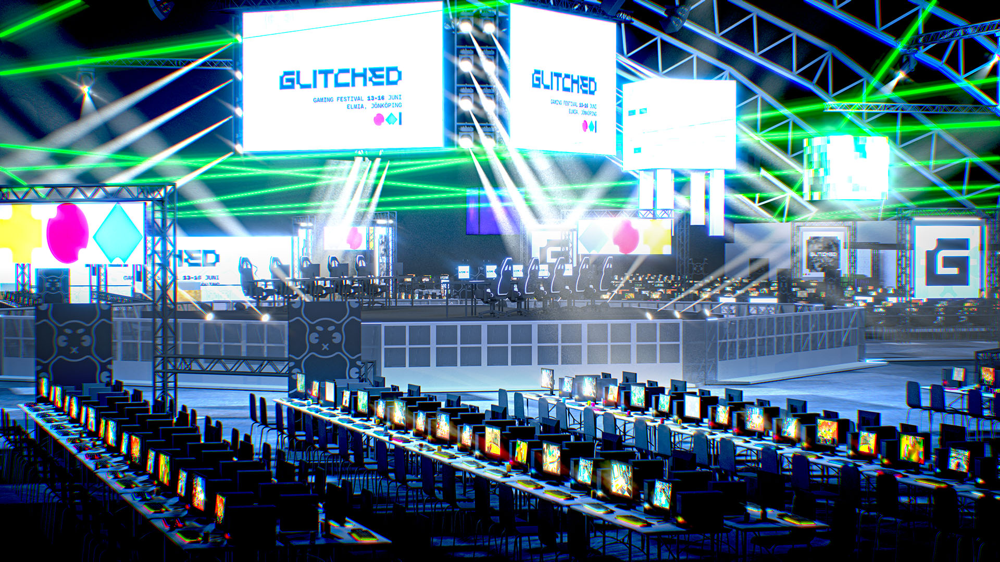
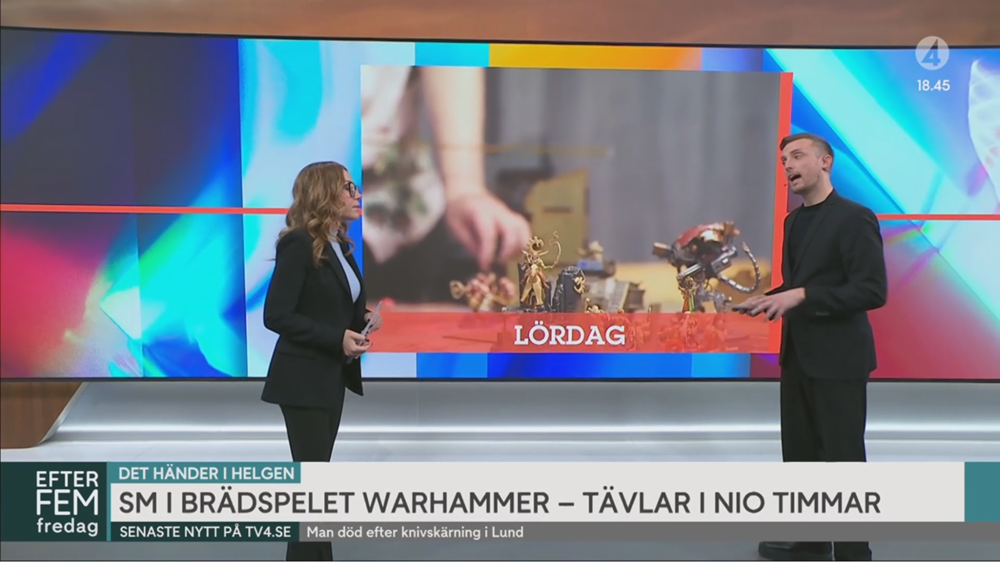
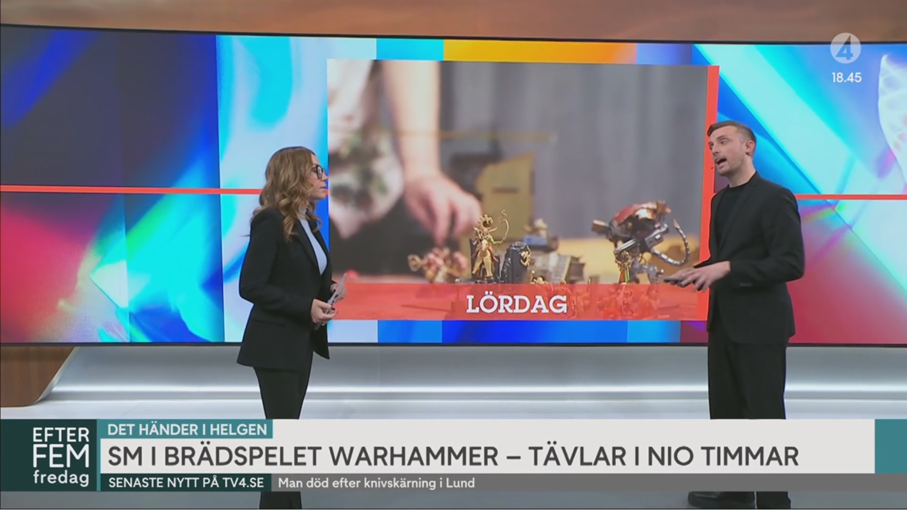

February 28, 2025
Stockholm - Veizla Mega, the largest Warhammer event in the Nordics, will take place on June 13–15 at Glitched Festival in Jönköping, Sweden.
Concept picture by Glitched.se
Warhammer 40,000, produced by Games Workshop, is the world's most popular miniature wargame. This 30-year-old game has experienced tremendous growth worldwide in recent years. The franchise is more popular than ever, with the highly anticipated video game Space Marine 2 receiving great reception and a newly founded partnership with Amazon for films and television series.
Founded in 2024, Veizla has quickly become the largest Warhammer 40,000 community in Sweden and the Nordics. The community is built on key partnerships, including:
 

The two largest TV-channels in Sweden covered Veizla’s Swedish Championship in Warhammer 40,000 2024
Now, Veizla Mega is the next big step—bringing a world-class Warhammer mega-event to the Nordic market and welcoming competitors from around the globe to experience an unforgettable gaming festival in beautiful Jönköping, Sweden.
“The Warhammer 40,000 community is truly unique and amazing. In today’s digital world, it’s refreshing to engage in a physical hobby. While hobbies like fishing or tennis are well-known, Warhammer 40,000 is like Fight Club—everyone does it, but no one talks about it!”
Veizla Mega is designed to elevate an already thriving Warhammer 40,000 tournament community. This Mega event will raise the bar for Warhammer in the Nordics and be a ‘must-attend experience’ for all tabletop and Warhammer enthusiasts!
Christian Lord, Veizla Founder

🔥 Premium Warhammer event in a convention center (a first for the Nordics!)
🎲 5-Man Team Tournament – 200 competitors, five epic rounds of 40k, Sat to Sun
🎥 Livestream - by Veizla & open for community streams
🎨 Hobby & Community Activities – Paint your first miniature, test the game with experienced players, and enjoy casual gaming
⚔️ Daily Singles Tournament – 3 rounds, 2,000 points
🎭 Cosplay & Special Events – More surprises to be announced!
📍 Location: Glitched Festival, Elmia Fairgrounds, Jönköping, Sweden
📅 Dates: June 13–15, 2025
Veizla Mega takes place at Glitched and offers several ticket options:
👪 Team Tournament Pass - for a team of five competitors. Includes five tickets with access to the entire festival and participation in Veizla Mega Team Tournament - Team bundle 5000 SEK per team. BUY HERE
🙍 Day Pass - General entry to Glitched 2025 (199 SEK - 249 SEK) and Veizla Mega. Includes access to all daily activities except the Team Tournament, including Daily Singles Tournaments. Use discount code “veizla” for 20% off. BUY HERE
🍕 Food Pass - Glitched offers a variety of food options, but for the best and most convenient experience, a Food Lounge Pass includes three meals per day (customizable). Read more: glitched.se
🎟️ All tickets are non-refundable but transferable. More information at https://glitched.se/tickets
Veizla Mega is part of Glitched, held at the Elmia Exhibition Center in Jönköping, Sweden. Address: Elmiavägen 11, SE-554 54 Jönköping. See also www.elmia.se.
🚌 🚆 🚗 ✈️ For detailed transportation info (bus, train, car, plane), visit Glitched.se/faq.
🏨 Hotels: Jönköping offers a great selection of hotels. See jkpg.com.
🏕️ Camping: In collaboration with Elmia, Glitched offers on-site camping from Friday to Monday. Camping spots can be purchased at Glitched.se/tickets. More info: Glitched.se/accommodation/camping.
For more information, news, and updates, visit Veizla Discord.
For ticket support, visit Tickster & Glitched Discord.
🔴 https://www.youtube.com/@veizlagaming
🟣 https://www.twitch.tv/veizla
🔵 https://www.facebook.com/Veizlagaming
🔴 https://www.tiktok.com/@veizlagaming
🟣 https://www.instagram.com/veizlagaming/
Join us at Veizla Mega and be part of something legendary!
Veizla is Sweden’s largest Warhammer 40,000 community, with:
Founded in 2024 by:
Christian Lord – Formerly at DreamHack/ESL/EFG, with 20+ years of experience in esports and gaming
Jesper Unander-Scharin – Captain of Team Sweden, Sweden’s #1 ranked player, MD, PhD, and Resident in Plastic Surgery
Axel Rydén – Long-time Team Sweden player, Sweden’s #2 ranked player, former World Champion, and media agency owner (clients include SVT, Viaplay, and TV4)